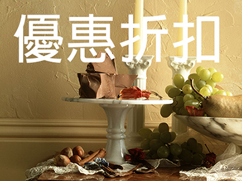

平溪放天燈 放眼平溪美景
平溪天燈一日遊
臺灣年度重大節慶活動之一「平溪天燈節」將1月26日登場，平溪區是全臺擁有最多瀑布的地方，瀑布群眾多且型態多樣，因此平溪區素有「瀑布之鄉」的美名。平溪週邊有許多訪古尋幽好玩的地方，除了放天燈外，不妨到平溪周邊帶著親朋好友進行一趟平溪訪春行。
菁桐站是平溪線的起點與終點，建於1929年，日據時代建築依舊保持迷人的風采，被列入臺灣歷史百景之一。保存完整，木造長椅、剪票口老柵門，現在的菁桐站猶如浪漫象徵。菁桐古道是清朝時期水返腳（即今日汐止）。由於居民需往來平溪汐止兩地、運送大青、薯榔、茶葉及日常用品等物資，日漸踩踏一條山林小徑，沿途穹蒼鬱林，植物資源豐富，鳥鳴聲不絕於耳。
平溪車站古樸風格

站在中華街上的平溪橋，能看到平溪鐵橋的橋墩，有時能捕捉到列車劃過鐵橋的景觀。 目前平溪街道，仍保有傳統的長條式街屋，每間房子則以兩層樓的古味建築為主。平溪老街，也是眾多廣告、電影喜愛的取景地，這廣播式泡麵廣告即在這取景，有「君雅大道」之稱。
觀音巖位於平溪區石底村後山，廟前四周環山，可遠眺平溪、石底兩村山色，以及孝子山險峻的岩峰，觀音巖旁有一處日據時期所構築的防空洞，係由五座山洞組成，已成了今日尋幽探險的基地。觀音巖旁階梯的後方小丘上步行一分鐘後，有報鐘亭，而吊鐘已由原先的警報功能轉化為平安象徵，敲響清脆的鐘聲成了過往遊客必循的神聖儀式。
三疊潭宛如仙境
嶺腳瀑布距離嶺腳車站約三分鐘路程，瀑高11公尺，瀑寬40公尺，屬垂簾型瀑布，為平溪區僅次於十分瀑布的第二大瀑布，瀑布下游由於有二層岩層疊狀，故與嶺腳瀑布合稱「三潭」或「三疊潭」。滴水觀音位於嶺腳村靈嚴寺旁，因滴水凝結成狀似觀音菩薩的鐘乳石石灰岩而得名，山腳下旺盛的水氣凝成雲龍一般的霧雲與環山裊繞，宛如仙境。
位於嶺腳車站附近的蔡家洋樓，屋內陳設和設計十分雅緻。古厝前排兩邊築起的低矮石牆留出中間走道，因為房舍漂亮，常成為電影與電視拍攝取景處。嶺腳必訪景點蔡家洋樓欣賞老建築蘊含的古樸氛圍，感染那份沉穩的氣韻。
「十分風景特定區」、「十分車站」、「十分寮老街」、「臺灣煤礦博物館」與平溪區公所進行橋墩美化，維持古早風味，同時多了描繪礦場生活的浮雕壁飾的靜安吊橋。
新北市政府觀光傳播局建議行程是幸福加１平菁輕鬆一日遊為菁桐火車站（別忘了掛許願竹喔！）、菁桐礦業生活館、菁桐煤礦公園、菁桐車站（可以跟台鐵列車長公仔拍照）、菁桐老街、菁桐火車站轉到平溪站、平溪老街（記得去找老郵筒）、參加天燈節系列活動。
若還要安排第二天行程可以從平溪火車站漫步到嶺腳（一公里約30分鐘）、嶺腳車站（記得拍弧形月台）、蔡家洋樓（別忘了小土地公廟）、滴水觀音祈福、嶺腳瀑布、漫步回平溪火車站、平溪火車站轉至十分火車站、十分老街、臺灣煤礦博物館然後到靜安吊橋。
放天燈，祈求心願達成，也讓夜空點綴光亮與美麗！然後與最愛的親友在平溪走春玩樂，放天燈也能放眼平溪之美。